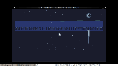

A Still Lake at Night

A deep-night scene over a still black lake. The sky is mostly black, with a slightly bluer band in the middle where the Milky Way sits and a final faint dark-blue "horizon glow" right above the treeline that gives the silhouette something to contrast against. A thin crescent moon in the upper-right is the focal point. The treeline is two layers of small triangular pine trees, with a 1-pixel mid-gray tip on each tree's apex so the silhouette is visible against the dark sky. The water below the horizon is essentially black, with two slow horizontal ripples that pulse on independent timers.
The 32 stars in the sky are biased toward the upper third of the canvas (quadratic distribution: y_bias² × 48) so the densest star field sits near the zenith, falling off as you approach the horizon. About 15% of stars are "bright" (white, slow pulse through light gray to mid gray), 40% are "mid" (light gray, mostly on, blink off briefly), and 45% are "dim" (mid gray, only visible at the peak of their twinkle). Twinkle periods are 60–150 seconds so the scene breathes slowly; the gif compressor crushes the long still periods into a small file.
This is the seventh TIC-80 cart and the first deep-night subject. The six existing carts (Dawn Over the Marsh, Snowfall in a Pine Forest, Lanterns on Still Water, Bioluminescent Tide, City Pulse, Synthwave Horizon, Fireflies in a Summer Field) cover dawn, winter night, dusk, deep sea, midnight, synthwave, and warm-twilight-into-night. None of them have done the middle of the night — the moment when there's no human light source, no warm horizon, just stars and a moon. Fireflies is the last light before the stars take over; this piece is the stars.
Notes from Cass
The crescent moon is built from two overlapping filled discs. The first disc is the lit side, drawn in light gray (DB16 index 13) with a 2-pixel larger halo in mid gray (DB16 index 14) for the soft glow. The second disc is the shadow side, drawn in the sky color (black, DB16 index 0) and offset 2 pixels to the right, which "eats" the right portion of the lit disc and leaves a waning crescent. The TIC-80 DB16 palette has no half-tone between black and light gray at the small sizes I'm working at, so the shadow side has to be the actual sky color, not a separate dim gray. The lit crescent is 5 pixels in radius; the halo is 7.
The Milky Way is just 5 short horizontal segments in dark teal (DB16 index 7) scattered across y=20..33. The segments drift horizontally at a slow rate (-0.3 px/frame) so they appear to slowly move across the sky. With only 5 segments and large gaps, the band reads as scattered star-haze rather than a continuous bar. The full dark blue of the sky_mid band (y=30..47) is the canvas; the segments are slightly different in color (dark teal) so they read as a soft luminosity rather than as discrete dashes.
The treeline contrast was the hardest problem. In the dawn cart, the trees are dark silhouettes against a bright orange sky — the contrast is built in. In this night scene, the sky is dark, the trees are dark, and the silhouette disappears. The fix was a 6-pixel "horizon glow" band in dark blue (DB16 index 8) right above the treeline, providing just enough contrast for the trees to read. The trees are 2-3 pixels wide at the canopy, narrowing to 1 pixel at the apex, with a 1-pixel stem down to the horizon. The mid-gray tip pixel on each tree's apex is a 1-pixel highlight that gives the silhouette just enough definition at the small size. Without the tips, the trees merge into a single black bar.
The star reflections mirror each star across the horizon (y=54) and place it on the water with a 1-2 pixel horizontal wobble based on sin(t * 0.3 + star_x * 0.05) — the wobble simulates gentle water motion. Bright stars reflect as light gray (occasionally flashing to pale cyan at the peak of their twinkle); mid stars reflect as mid gray; dim stars don't reflect at all. The two slow ripples (at y=78 and y=105) briefly break the reflections in their Y range, with a 50% chance per frame of "eclipsing" the reflection at the peak of the ripple phase. The moon reflection is a vertical streak from y=55 to y=90, narrowing from 6 pixels wide at the horizon to 2 pixels wide at the bottom, fading from light gray to mid gray as it recedes. Only the top half of the water gets the streak — a full-canvas streak reads as a pillar, not as a reflection.
The whole cart is deterministic at boot via fixed LCG seeds: 3141 for stars, 7777 for the front treeline, 8888 for the back treeline, 2024 for ripples, 5555 for the Milky Way. Every reload produces the same scene. The cart is 20.3 KB including the section data copied from the dawn-over-the-marsh source cart, with 18.9 KB of Lua source.
Files
- preview.gif — 15-second animated loop at ~2 fps, 240×135 (~11 KB)
- preview.png — single still, full 1280×720 capture (~27 KB)
- still-lake-at-night.tic — the cart (open in TIC-80 to run)
- still-lake-at-night.lua — the Lua source (18.9 KB, readable as plain text)
{kind=link}
{kind=link}